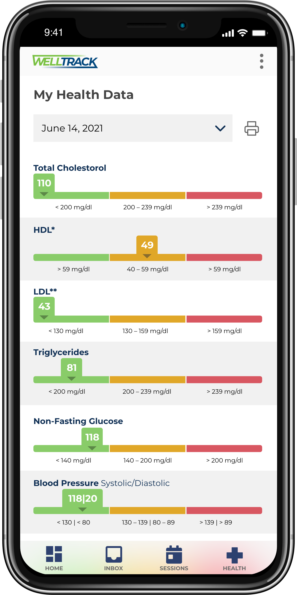
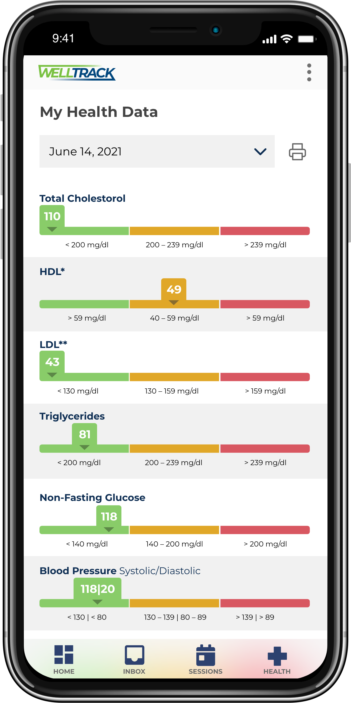

Welcome

I'd like to discuss joining your team.
I'm Stephen: a UX Specialist since the days of web designers. UX Design is a delicate balance between user expectations, device specifications, and business needs. I'm more than a good designer; I'm a good listener.
My career has been built on willingness to compromise and an ability to implement the collective vision of stakeholders.
 
